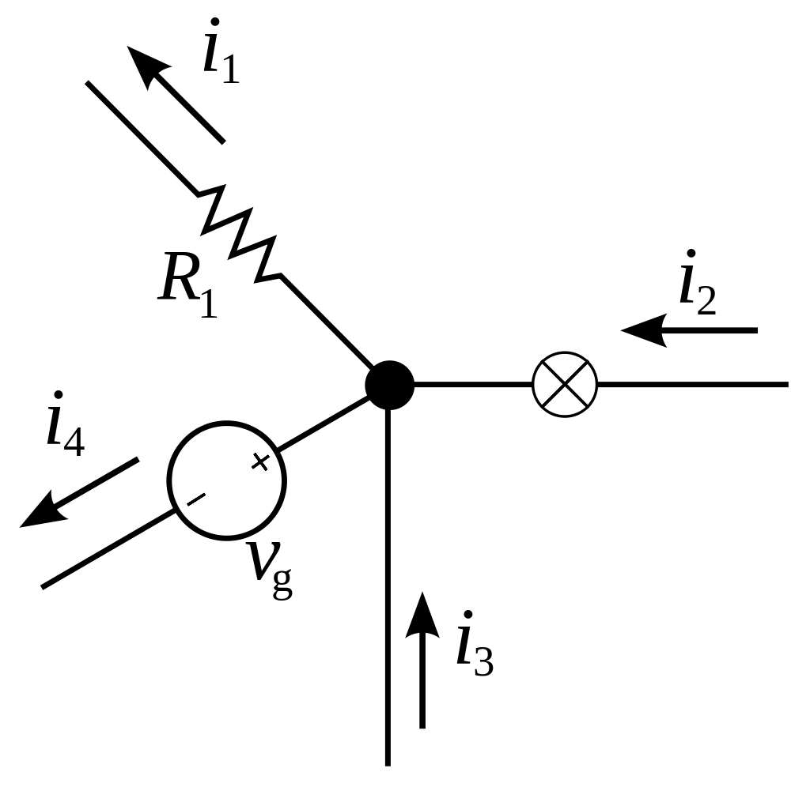

Kirchhoff törvénye
A Kirchhoff-törvények a villamosságtanban a töltés és az energia megmaradását tárgyalják
Kirchhoff I. törvénye: A csomóponti törvény
A csomóponti törvény párhuzamos (elágazó) áramkörökre vonatkozik. Az elágazásnál csomópont keletkezik. A törvény értelmében a csomópontba befolyó áramok összege megegyezik az onnan elfolyó áramok összegével. A törvény alapja az, hogy egy villamos hálózat csomópontjaiban nincs töltésfelhalmozódás (forrásmentes hely).

Bármely csomópontba befolyó és onnan elfolyó áramok előjelhelyesen vett összege nulla. Ha a befolyó áramot pozitívnak, az elfolyót negatívnak vesszük, akkor: -i1 + i2 - i4 + i3 = 0 Ebből következik, hogy i1 + i4 = i2 + i3
Kirchhoff II. törvénye: A huroktörvény
Sorosan kapcsolt áramköri elemekre vonatkozik. A törvény értelmében bármely zárt hurokban a feszültségek előjeles összege nulla.
Az előjel megállapítása úgy történik, hogy egy tetszőleges irányítású "körüljárási irányt" veszünk fel. A körüljárási irányt egy be nem záródó körvonal végén a nyíl jelzi. Ha az áramkör csak egy hurokból áll, a kör középpontjába írt "+" mutatja, hogy az ilyen irányú feszültségeket tekintjük pozitív előjelűnek (azok a feszültségek pedig, melyek iránya a körüljárási iránnyal ellentétes, negatív előjelűek). Ha az áramkör több hurokból áll, a kör középpontjába a hurok sorszáma kerül. Zárt hurokban a feszültségforrások összege megegyezik a feszültségesések összegével.

A körüljárási irányt az óramutató járásával megegyezőnek választottuk. Az ezzel megegyező irányú részfeszültségek pozitívak: – Ug + U1 + U2 = 0 Ebből következik, hogy Ug = U1 + U2